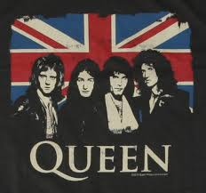

Queen
Banda britanica de rock formada en 1970 en Londres.

Integrants del grupo
Brian May
Freddie Mercury
John Deacon
Roger Taylor
Grandes exitos de Queen
Año
Disco
1975
A Night at the Opera
1986
A kind of Magic
1989
The Miracle
"A king of Magic" fue el album mas exitoso.
Sitio web oficial
www.queenonline.com
Volver a la pagina principal